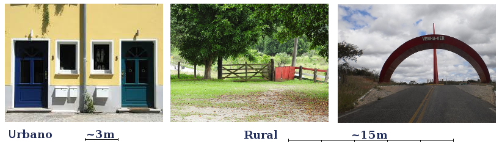
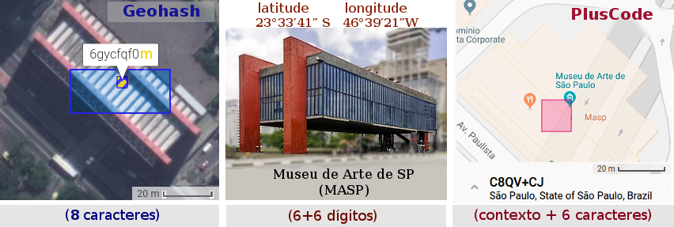
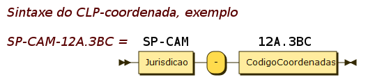
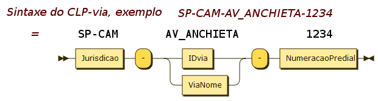

v0.0.7g
Proposta de Código Localizador de Portão, CLP: estudos de viabilidade e consulta pública.
A ideia central do CLP é oferecer de maneira simples e padronizada, através de um código, a localização geográfica de um portão. O código será também recomendado como expressão digital do endereço da casa ou local ao qual o portão dá acesso.
Portão em sentido amplo, de portaria, porteira, porta, acesso ou portal: no meio urbano a menor distância entre portões é da ordem de 3 metros, no meio rural (ou ainda nos parques e condomínios do meio urbano) é da ordem de 15 metros.

As tecnologias para se implantar e padronizar um CLP são bem consolidadas, existem opções como o Geohash, S2 ou PlusCode, que são padrões livres, e MapCode ou Whats3words, patenteados mas úteis como exemplo. Estas opções tecnológicas globais podem ser melhor adaptadas às condições e padrões locais do Brasil, e nisto consistirá uma parte relevante dos estudos e recomendações realizados pelo presente projeto.
Motivações e estratégias
O conceito de portão do CLP está relacionado com o local onde se habita ou se trabalha, ou onde são prestados serviços públicos: ser informado do local ou informar oficialmente o local são necessidades básicas asseguradas pela Constituição. Refere-se ao direito de acolher e ser acolhido nos pontos de acesso publicamente definidos, é um direito com facetas do habitar (arts. 6º e 23), do ir-e-vir (art. 5º inc. XV), do ser informado (Art. 5º inc. XXXIII) e do trabalhar (arts. 6º, 170 e 193).
Se um desses casos carece de endereço oficial, é uma dívida em aberto, do governo com o cidadão. A chave da informação oficial, nos dias de hoje, é localizar a posição em mapa público e aberto, tal como OpenStreetMap. É uma questão de soberania nacional (art. 4º, incisos I a X), não depender de patentes, direitos autorais ou infraestrutura estrangeira.
Em 2018 a Secretaria da Agricultura de Estado de São Paulo reconheceu a sua dívida para com os habitantes e prestadores de serviços do meio rural, tendo procurado a Comunidade OpenStreetMap Brasil em busca de soluções soberanas abertas. Um dos frutos desse diálogo está no Decreto Estadual 63.764 de SP, que referencia "mapas abertos e rotas viárias de acesso às propriedades rurais".
O CLP evoluiu de simples ideia a projeto. Convidados em seguida prefeituras usuárias do OpenStreetMap e o Terceiro Setor, através de entidades tais como a TETO BRASIL, todos vêm dialogando com a comunidade técnica em busca de soluções abertas, eficientes e duradouras.
Quanto a outras aplicações para o CLP, não faltam! Localizar e descrever onde está localizado vale para casa, shopping, bicicletário, borracharia, café, restaurante, árore, estátua, barraca da feira... Uma lista infinita, que parece limitada apenas pela imaginação.
Quanto à fundamentação, é sólida e amplamente adotada. O sistema universal de localização, aceito em qualquer país, é a coordenada geográfica (latitude/longitude). Mais especificamente o sistema de coordenadas WGS84, presente inclusive em mapas digitais e dispositivos de localização (ex. smartphone com receptor GPS). Todavia cada coordenada tem de 6 a 8 dígitos, somando de 12 a 16 dígitos, não é um código curto. Os códigos Geohash, PlusCode e similares, para a mesma precisão, gastam 6 a 9 caracteres: são soluções viáveis, com códigos bem mais curtos.
Tais tecnologias são viáveis até mesmo para substituir o CEP dos Correios. O CEP 20031-050 do endereço de entrada do Teatro Municipal do Rio, não nos diz onde está, informa apenas que é a rua Evaristo da Veiga. Um código localizador, como por exemplo PlusCode 3RRF+6F, diz exatamente onde está o portão!
[siga o link do 3RRF+6F para entender se ainda não conhece]
O CLP de um endereço
O CLP, quando representando um endereço de correspondência, pode ser recomendado como substituto do CEP nos lugares onde o CEP não chegou, tipicamente nas fazendas, vilas e zonas rurais. O CLP pode ser também expressão do próprio endereço, onde não existe nome oficial de logradouro, como em novos loteamentos, em conjuntos habitacionais precários e em favelas.
... O que seria ideal fazer, melhorar o CEP ou implantar o PlusCode? Ou tecnologia Geohash? Ou tecnologia S2? Será que podemos melhorar essas tecnologias para as nossas condições, garantindo a padronização de códigos mais curtos para o Brasil?
Em estudos preliminares já comprovamos que é possível usar tais tecnologias e moldá-las ao Brasil e a cada município para deixar o código ainda mais curto. A seguir um breve resumo de como tentaremos responder a estas e outras questões, junto com a comunidade, através da construção da proposta do CLP.
Contexto com siglas
Se quero explicar para outra pessoa no telefone onde moro, digo algo como "eu moro aqui na rua tal, São Paulo, SP, Brasil"... Mas se já sabemos que estamos falando da mesma cidade, não precisa repetir tudo. Se o contexto é conhecido, é redundante repetir. Ademais, o contexto espacial precisa ser algo simples e padronizado, como as siglas de estado (ex. SP), para que fique o mais curto e seguro possível quando for preciso comunicá-lo.
O contexto em um geocódigo precisa ser legível não só para computadores mas também a seres humanos, aí ser mais amigável o uso de uma hierarquia de siglas, padronizadas e fáceis de lembrar.

Comparações e como seria
Vejamos como seria o CLP, por exemplo, para localizar o "portão" do MASP.

Os códigos de localização existentes, como o Geohash ou o PlusCode, assim como estão, já seriam melhores do que o CEP por localizarem o portão com o mesmo número de dígitos. Mas eles também podem ser melhorados, adaptados para o Brasil, fazendo uso do que os brasileiros já têm no seu dia-a-dia. Deveria ser natural, por exemplo:
-
o uso de abreviações consagradas como os códigos de estado:
BR-SPou simplesmenteSPdesigna o Estado de São Paulo,AMAmazonas, etc. -
a abreviação de 3 letras do município: Sampa é
SPA, a vizinha GuarulhosGRHe PiracicabaPIR... Jaraguá do Sul em SC éJGS. -
das regras de hierarquia: primeiro sigla estadual depois municipal. A sigla PIR só tem significado dentro da sua hierarquia,
SP-PIRsignifica Piracicaba, que é diferente deGO-PIR, de Pires do Rio; -
do contexto. Numa carta internacional acrescentamos prefixo
BRficandoBR-SP-SPA, mas se a carta circula apenas dentro de SP basta a sigla do município, comoPIRouSPA.
Estas regras simples, uma vez formalizadas como padrão, garantiriam um código CLP mais adequado para o brasileiro usar. As siglas, não se vê todos os dias, mas já vinhamos usando: em diversos códigos oficiais, em mapas e nas placas de vias públicas. As siglas estão no código das estradas federais (ex. BR-116), estaduais (ex. SP-147) e municipais (ex. PIR-033).
Outro aspecto sujeito à padronização-Brasil, é quanto ao conjunto de cobertura — células da grade de menor escala que servirão de "contexto", definindo o município e proporcionando prefixos mais curtos. Na grade Geohash por exemplo, o ponto do MASP, 6gycfqf0, faz parte do contexto São Paulo (SPA), ilustrado abaixo, e teria o seu prefixo 6gyc associado ao índice 2, resultando em 2fqf0 (!), reduzindo o código do MASP a apenas cinco caracteres.

Mais alguns exemplos de Geohash de portão traduzidos para CLP:
6gycf5q2 ⟾ 2f5q2: Portão 9 do Ibirapuera (troca 6gyc por 2)
6gybcsdv5 ⟾ 1csdv5: entrada do Circo-escola Grajaú (troca 6gyb por 1)
Reparamos então que o "contexto", que pode ser a sigla SPA ou o nome completo "São Paulo, SP, Brasil", tem seu significado traduzido para o conjunto cobertura, e com isso ganhamos códigos mais curtos.
Vejamos as siglas e os códigos no caso da localização no museu do MASP, como seriam pequenas adaptações, resultando em opções de código CLP mais adequadas do que cada opção tecnológica "pura". Quando fazemos essas adaptações podemos então comparar as tecnologias:
| CLP resultante (contexto BR) |
Detalhes da opção tecnologica |
|---|---|
SP |
Código ISO 3166 do estado (BR-SP) |
SP:Y |
Geohash da região (6gy) ~140×140 km |
SP-SPA |
Código Oficial do município (BR-SP-SPA) |
SP:2F |
Geohash da sub-região (6gycf) ~4×5 km |
SP:E59 |
S2 da sub-região (94ce59) ~8×8 km |
| (contexto BR-SP) | |
SPA-2FQ.F0 |
Geohash do portão (6gycfqf0) ~25×20 m |
SPA-2FQ.F0M |
Geohash de um ponto (6gycfqf0m) ~4×4 m |
SPA-C8QV.VCJ |
PlusCode do portão (588MC8QV+CJ) ~15×15 m |
SPA-C8QV.CJ4 |
PlusCode de um ponto (588MC8QV+CJ4) ~3×3 m |
SPA-1CSI.IM * |
S2 do portão (94ce59c94ac) ~15×15 m |
SPA-1CSI.IN1 * |
S2 de um ponto (94ce59c94ae1) ~2×2 m |
* código hexadecimal convertido para base32. |
Qual opção de tecnologia adaptada ao CLP seria a melhor? Qual gera códigos mais curtos e precisos? Mais fáceis de lembrar? Com infraestrutura mais barata?
No debate devemos chamar atenção, por exemplo, para o fato de que o PlusCode não satisfaz o requisito da hierarquia nas macroregiões, nas escalas de bairro e quadra: precisamos dessa parte da hierarquia?
É fundamental saber, antes de decidir qual tecnologia usar, quais critérios consensuais adotaremos como requisitos do CLP. Nem todos os critérios técnicos são evidentes, e nem todos os critérios são técnicos. Daí o projeto estar enfatizando a formação de um coletivo para a discussão e votação das melhores opções, iniciando por representantes das comunidades brasileiras que entendem do assunto, como a OpenStreetMap Brasil, a TETO Brasil e a Wikidata-Brasil.
Mesmo entre as tecnologias aparentemente acabadas como PlusCode ou Geohash, outras otimizações podem ser realizadas, levando a códigos mais curtos ou mais mnemônicos. Se o padrão CLP fizer uso de estimativas da densidade de ocupação e da "mancha urbana futura", como fizeram o CEP e o MapCode, os códigos ficam ainda melhores, mais curtos, mas a custo de códigos mais longos nas vilas do meio rural... Tudo isso seria detalhado pelo presente projeto, para que tenhamos subsídios para uma decisão ótima e racional.
O levantamento sistemático, com seleção de otimizações viáveis e a comparação dos resultados otimizados é também tema central da presente proposta, um resultado importante de ser apresentado.
Dois padrões, via e coordenada
Afinal CLP, Código Localizador de Portão, faz também papel de "endereço da casa dona do portão". Falta então definir um outro padrão, que seria uma expressão compacta do endereço postal tradicional.
Por exemplo o endereço do MASP, "Avenida Paulista 1578, São Paulo", fica mais compacto trocando-se o nome exteso São Paulo pela sigla SPA e abreviando avenida de forma patronizada para "av", resultando no código SPA‑av_paulista‑1578.
Alternativamente, em um contexto onde os nomes de logradouro são batizados com códigos oficiais, o padrão também deve prever a expressão codificada. Suponhamos que o código oficial da avenida fosse U131, então o CLP resultaria em algo como SPA:U131-1578.
Esse tipo de código é importante para a representação interna dos endereços de correspondência em bancos de dados, links da internet, e na comunicação entre bancos de dados (interoperabilidade).
Existem portanto dois grupos principais de CLPs:
| Definição do tipo | Aplicações e exemplos |
|---|---|
| CLP-via: Soluções baseadas na proximidade do portão com uma via de acesso a ele, contendo o código da via e a numeração praticada na via. O CLP-via seria uma escrita simplificada e padronizada do endereço postal tradicional, baseado em logradouro e numeração predial. | Expressão digital segura e padronizada de um endereço usual. Garantiria de links corretos e maior interoperabilidade entre bases de endereços. |
| CLP-coordenada: Soluções baseadas na coordenada geográfica do portão. Um algoritmo seguro, do tipo Geohash ou outro, toma como entrada as coordenadas padrão Geo URI, e devolve um código compacto, que é adotado como CLP. |
Todas as aplicações e vantagens das tecnologias exemplificadas (Geohash, PlusCode, etc.). Além disso o CLP-coordenada pode ser proposto como substituto do CEP, e como uma opção em protocolos similares ao Geo URI. |
Tecnicamente um tipo pode ser convertido no outro através de procedimentos de geocodificação. Como existe um crescente mercado de geocofificação, a padronização dos dois tipos de CLP também ajudaria a regulamentar o setor, garantindo a separação entre pré-processamento do CLP-via e a geocodificação, que resulta num Geo URI com certo grau de confiabilidade. Quando ambos são fornecidos, ambos podem ser convertidos em coordenadas geográficas e comparados, aferindo-se também um grau de confiabilidade resultante da comparação dos dois. Critérios mínimos para a avaliação de custo e confiabilidade na geocodificação de endereços brasileiros, portanto, passariam a ser viáveis.
A rigor ambos os códigos, CLP-via e CLP-coordenada, são expressões simbólicas cabíveis dentro das regras de construção de nomes fixadas pelo padrão RFC-8141, referente à expressão de URNs (do inglês Uniform Resource Names). Diversas URNs já são usadas no Brasil, tais como código de livro ISBN, e a URN LEX, o código oficial identificador de leis e decretos.
A expressão formal do CLP-coordenada do MASP seria algo como urn:geocode:br-sp-spa:ycfqf0, e do seu CLP-via algo como urn:geocode:br-sp-spa:via:av_paulista-1578, mas isso apareceria apenas em links e bancos de dados.
Na prática os códigos impressos, para leitura humana, sinalização, correspondência, etc. aparecem em contextos onde a sintaxe completa de urn é dispensável, ficando apenas a estrutura essencial:
 
Em ambos os casos o significado de "resolver o código" é transformar o código em uma coordenada geográfica, um ponto no mapa representando a localização do portão. Os algorítmos (softwares) de transformação não podem ser patenteados, precisam ser abertos, livres de direitos autorais, assim como os dados — disponíveis por exemplo no OpenStreetMap.org.
Planejamento
O trabalho foi apenas esboçado, um banco de dados está sendo preparado, alguns testes foram feitos, parte da comunidade já está dialogando... Todavia há muito que ser realizado, completando tarefas, coordenando voluntários, ampliando o debate e sistematizando decisões. Não é muito diferente do ciclo de construção de normas técnicas.
Objetivo e metas do trabalho
Resumo:
Construir, debater e revisar com a comunidade os requisitos do CLP, que subsidiarão os testes, seleção e debate das principais alternativas tecnológicas — por exemplo Geohash, PlusCode e S2geometry —, elegendo-se entre elas o fundamento do CLP .
Construir, debater e revisar com a comunidade a especificação técnica do CLP v1.0, bem como disponibilizar protótipos para a realização de testes abertos durante a consulta pública.
Alinhar a proposta através do diálogo com autoridades técnicas (ex. ABNT, IBGE e universidades) e governamentais (ex. SINTER e secretarias de estado), oferecendo após consulta pública, uma proposta CLP v1.1 mais consistente e consensual.
As discussões e decisões coletivas seguirão a "metodologia das rodadas de discussão estruturada", ou similar. Inicialmente em um grupo mais especializado depois crescendo para um coletivo mais amplo na análise das soluções:
-
Comunidades OpenStreetMap e Wikidata. Esse núcleo inicial tem ajudado a delimitar o escopo nos requisitos e a listar todas as potenciais soluções.
-
Representantes das demais comunidades do terceiro setor e universidades. Por exemplo ONGs de inclusão social e construção de habitações já vem apoiando a formalação dos requisitos. ONGs orientadas a software e dados abertos ajudam a testar soluções. Todas, através dos testes e do diálogo tomam parte nas rodadas de busca de consenso para as melhores práticas e soluções.
-
Empresas. Ajudam a avaliar a viabilidade do "ecossistema de soluções" que poderiam surgir em torno do padrão, e em todas as instâncias do debate técnico.
-
Prefeituras menores. É prevista a realização de testes concretos em municípios menores, com o apoio de prefeituras que já vinham aderindo a soluções abertas e uso do OpenStreetMap.
-
Autoridades governamentais. Já vem ocorrendo o diálogo por exemplo com o SINTER (Sistema nacional de gestão de informações territoriais), ligado à Receita Federal, e Secretarias do Estado em SP. Apesar de ser importante o diálogo ao longo de todo processo, a formalização se dará apenas no final, com a proposta v1.0 consolidada. Outros importantes atores no setor são o IBGE, a ABNT e as diversas Secretarias de Estado, na Agricultura, na Habitação, no Turismo, e no Meio Ambeinte.
Não estamos sozinhos
A busca por soluções tecnológicas é mundial, floresceu nos anos recentes, devido à ineficiência dos códigos postais tradicionais no mundo digital, e a sua falta de abertura. A lista de OpenDataIndex referente a Postcodes com uma centena de outros países, destaca que apenas ~5% são considerados razoavelmente abertos: 90% dos países ainda apresentam problemas sérios de licença privada e exploração comercial sobre dado público, como no Brasil.

Quanto à tecnologia, na Europa, Japão e outros países já se estuda um "upgrade" dos respectivos CEPs. Na Irlanda por exemplo diversas alternativas tecnológicas foram estudadas entre 2010 e 2011, resultando mais tarde na implantação de um sistema mais moderno, o Eircode, baseado em coordenadas geográficas.
Quanto à população mais sensível ao problema de "não ter um endereço para chamar de seu", no Brasil, quem mais sofre é a população do meio rural, e os bairros e regiões em situação de habitação precária — segundo dados da TETO Brasil são ~15 milhões habitantes em situação precária. Todos beneficiariam enormemente de um código de localização oficial.
Este projeto se encontra disponível em github.com/OSMBrasil/CLP (discutir aqui).
Conteúdos e dados deste projeto são dedicados ao domínio público. Ver também Créditos das imagens.